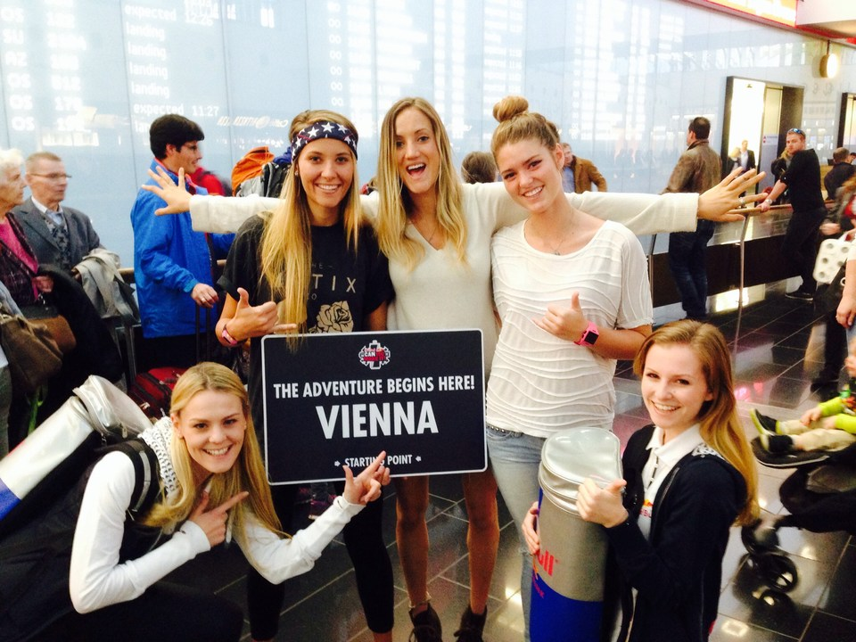
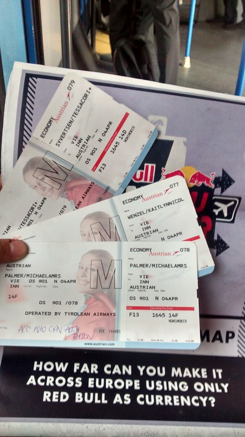
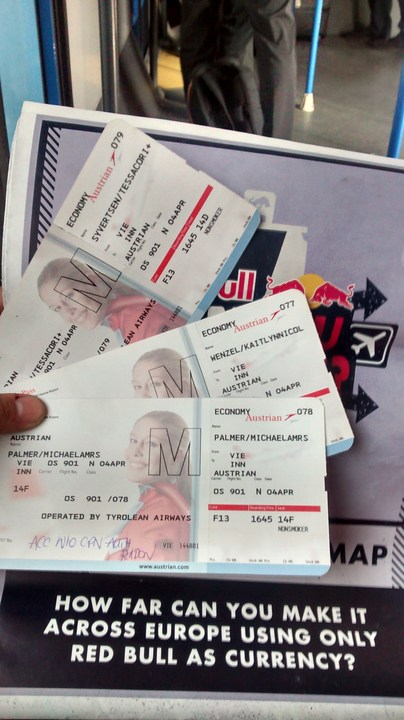
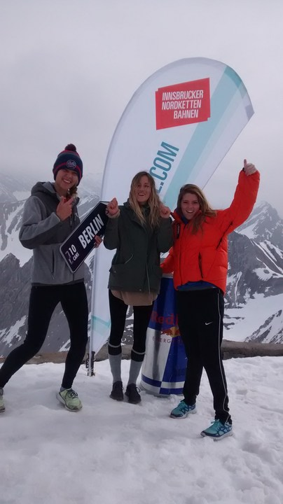
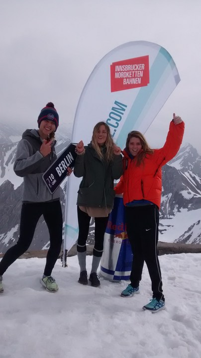

Most recently,
I've had the opportunity to travel across Europe through a competetion for Red Bull called "Can You Make It". The goal was to make it from a certain starting point to Berlin through several checkpoints in several countries, without using any money- only Red Bull as currency. As mad as it sounds it was an absolutely epic adventure. Here's the break down from start to Finish.
How did we get into this mess?
Here's the application video that landed me and my two good friends, Kate Wenzel and Natalie Palmer, a flight to Europe and a life-changing week:
Arrival...
Our starting point was in Vienna, Austria. We were greeted at the airport by the Austrian version of Lenny Kravitz, taken to our hotel for the night, and met the other absolutely outrageous teams from all over the world. That night we were treated with an Austrian feast and a raging party with native line dancers. Also, a vegetarian, I ate "black pudding" thinking it was a dessert. Its fried blood, for those of you who don't know.Day One
We were dropped off by the Red Bull party bus that still smelled like champagne at an empty amusement park. Here we were debriefed, left our money and phones behind, and didn't look back with only a 24 pack of Red Bull in hand.After attemting to hitchhike, we were picked up by a French priest and dropped off in the middle of no where in Austria. Not even half way to the first checkpoint and four hours later, near tears, a shuttle driver offered to take us to the airport. After running into a batchelor party and failing to score a free taxi, we decided to talk to some well dressed flight attendents who happened to be operations managers, with the right connections in marketing. Next thing we know, we're trading three cans for a FREE FLIGHT to Innsbruck. I can't even describe the mental transition from low to high, from the side of the road in tears to a smooth flight into the Austrian Alps. We skated to our checkpoint from the airport, with a river and the most beautiful mountains in the background.
We were greeted at the checkpoint (a super cool bar) with smiles, disbelief, and beers. We relaxed, hung out with a team from Hungary, explored the beautiful Harry Potter style city of Innsbruck, and skated around for hours.
Day Two
The next morning we woke up early for the checkpoint challenge to earn some more cans. We took a lift all the way up the mountain, got to witness a mountain bike race, and hiked to the top peak. Literally breathtaking views, and we even got to ski.
My future travel plans are to study abroad in Brisbane, Australia. Hopefully I'll get to explore Indonesia before oor after, while I'm on that side of the world. Stay tuned for the next adventure :]


 


 
